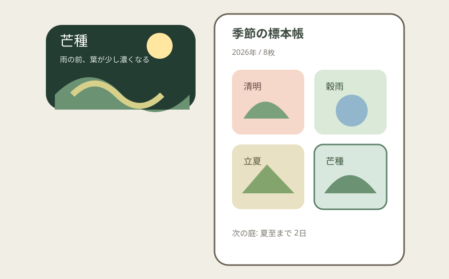
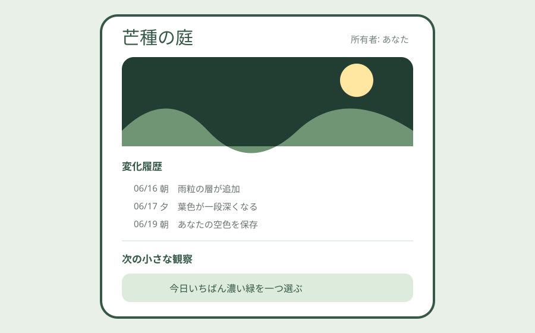

Question Note
二十四節気で育つ「季節の小庭」ウィジェット事業案


体験の全体像
「季節の小庭」は、二十四節気、時刻、選んだ地域の天気、生物季節観測をきっかけに、ホーム画面の小さな庭が少しずつ変化するアプリです。課題解決を装わず、季節を15日単位で見つけ直すこと、毎日の微差を眺めることを商品価値にします。
中核は一目で変化に気づくアンビエント表示、節気ごとの標本収集、短い観察の記録です。既存作品の名称、画面、素材、世界観は使わず、和紙の切り絵と抽象植物による独自表現にします。
利用者・きっかけ・継続ループ
初年度は季節の変化を感じたいが、ゲームの世話や長文日記は続かないiPhone利用者を対象にします。
| 体験要素 | 設計 | 継続理由 |
|---|---|---|
| 状況トリガー | 節気の切替、朝夕、地域の開花・紅葉 | 自分で更新しなくても景色が変わる |
| 反復ループ | 眺める → 一つ観察 → 標本を残す | 1日10秒でも完了する |
| 端末面 | ホーム画面ウィジェット、ロック画面、アプリ内庭帳 | アプリを開かなくても価値が届く |
| 内容差分 | 24節気 x 朝夕 x 4天候 x 地域観測 | 同じ庭でも一年を通じて変化する |
既存手段で足りない点
- 天気ウィジェットは情報効率が中心で、季節を集める感情的な余白が少ないです。
- 育成ゲームは通知や作業が中心になり、静かに眺めたい人には義務感が生まれます。
- 写真日記は素材選びと文章入力が必要で、10秒の小さな習慣には重すぎます。
サービス構成
- 節気・時刻・天候に応じて色、光、葉、音の有無が変わる庭
- 「空の色」「最初の雨音」など一問だけの観察カード
- 観察カードから自動生成される自分用の季節標本帳
- 過去の同じ節気を並べる年越し比較
- 追加庭テーマ、環境音、ウィジェット枠の有料パック
位置情報は必須にせず、都道府県または気象地点を選ぶ方式を標準にします。通知、投稿、連続日数の罰を設けず、離れても次の節気から自然に戻れる設計にします。
中核ワークフローとシステム要件
- 利用者が地域、庭の紙質、音の有無を選ぶ。
- ウィジェットが現在の節気と配信済み演出を表示する。
- 任意で一問の観察を残し、その日の標本を保存する。
- 節気の終わりに標本帳へ一枚追加し、次の庭を予告する。
必須要件は、オフライン表示、端末内キャッシュ、低頻度更新、位置情報なしでの利用、削除・エクスポート、色だけに頼らない変化表現です。
100万円規模に抑えた市場設定
| 項目 | 仮定 | 結果 |
|---|---|---|
| 到達可能利用者 | 作品紹介・季節コンテンツ経由で5,000人 | 広告大量投下を前提にしない |
| 年額プラン | 900人 x 980円 | 882,000円 |
| 季節パック | 460購入 x 300円 | 138,000円 |
| 初年度売上 | 合計 | 1,020,000円 |
収益モデルと支払い理由
- 基本: 年額980円で24節気の庭、3ウィジェット、標本帳
- 追加: 300円の庭テーマ・環境音パック
- 無料版: 4節気の庭と小サイズウィジェットで体験確認
広告で静けさを壊さず、毎日視界に入る独自アート、年間更新、過去比較を保つために少額を払うモデルです。見栄えだけでなく、端末外サーフェスへ継続して届くことが保持理由になります。
AWSシステム要件と支出
東京リージョン、1 USD = 150円、無料枠・クレジット除外、1,500 MAU、月10万同期、画像・音声20GBを前提にした概算です。転送量と購入者数を確定後、実装前にAWS Pricing Calculatorで再計算します。
| AWSリソース | 製品固有の用途 | 使用量 | 月額 | 年額 |
|---|---|---|---|---|
| Amazon S3 | 庭のレイヤー、環境音、節気定義 | 20GB | 500円 | 6,000円 |
| Amazon CloudFront | 季節アセット配信 | 60GB転送 | 1,500円 | 18,000円 |
| Amazon Cognito | 標本帳同期を使う任意アカウント | 1,000 MAU | 600円 | 7,200円 |
| Amazon API Gateway | 演出定義・標本同期API | 10万リクエスト | 300円 | 3,600円 |
| AWS Lambda | 節気切替、購入検証、同期 | 12万実行 | 450円 | 5,400円 |
| Amazon DynamoDB | 利用者設定、選択地域、購入権利、庭テーマ、節気カード、観察履歴、標本、同期版、削除状態 | 3GB、月20万読書 | 900円 | 10,800円 |
| Amazon SES | 購入・アカウント復旧メール | 月1,000通 | 200円 | 2,400円 |
| Amazon CloudWatch | 同期失敗と配信遅延監視 | ログ2GB、アラーム6件 | 800円 | 9,600円 |
| AWS Backup | 標本・購入権利の日次復旧 | 8GB | 450円 | 5,400円 |
| AWS Budgets | 転送費の上限通知 | 2予算 | 150円 | 1,800円 |
| Amazon Route 53 | 紹介サイトとAPIのDNS | 1ゾーン | 100円 | 1,200円 |
| AWS合計 | 小規模時の予算上限 | 5,950円 | 71,400円 | |
AIを使った開発見積もり
| 作業 | AI活用 | 目安 |
|---|---|---|
| 体験設計 | 節気マトリクスと文案の発散 | 1.5週 |
| プロトタイプ | ウィジェット状態とダミーデータ | 2週 |
| 本実装 | 同期・課金・テスト補助 | 5週 |
| アート・検証 | 素材管理と回帰検査補助 | 4週 |
AIなしの約18週を約12.5週へ短縮する仮説です。世界観、最終アート、権利確認、端末上の静けさは人が判断します。
売上・支出・利益
売上 - 支出 = 利益
| 売上 | 1,020,000円 | 年額882,000円 + パック138,000円 |
|---|---|---|
| 支出 | 351,400円 | AWS 71,400円、ストア手数料等153,000円、音・アート外注90,000円、端末・告知37,000円 |
| 利益 | 668,600円 | 事業主の制作・運営人件費と税引前 |
必要人数と人材要件
開発・運営1人が中核です。
- 実行者: iOS/WidgetKit、AWS同期、課金、アートディレクション
- 補助外注: 環境音4〜8点と季節アートの仕上げ
- 人に残す判断: 独自性、文化表現、通知頻度、アクセシビリティ
リスクと最初の検証
- 天気アプリに見える場合は、情報量を減らし「標本が残る」価値を前面に出す。
- 背景更新の制約で変化が遅れるため、節気アセットを事前配信し端末内で切り替える。
- 生成物が均質になるリスクを避け、公開アートは人が制作・選定する。
最初は4節気・3天候・小ウィジェットだけのTestFlightを50人に4週間提供し、週3回以上の視認、観察保存率、年額980円の購入意思を測ります。
結論
毎日操作させるのではなく、暦と地域の変化が先に届き、気づいた時だけ一つ標本を残せる静かな反復が商品です。